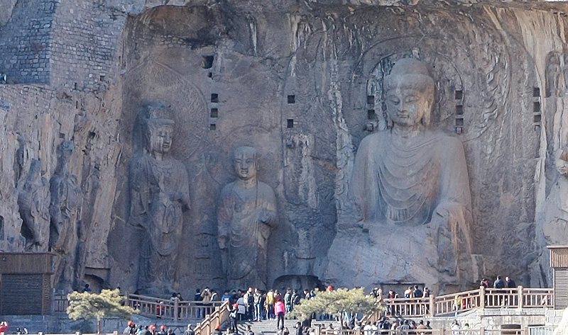

龙门石窟座落在伊水河边，虽然是十二月，但河边的柳树还是嫩绿色。龙门石窟佛像虽多，但很大一部分都已被破坏，最常见的就是佛像的头被凿掉了。历史颇差的我们当时各种猜测，最终回来网上查了查，发现也八九不离十。“唐武宗时期的灭佛运动；清末和民国初年石窟造像被盗；此外，民国政府为从南京迁都洛阳，修建龙门西山下道路时也炸毁了大量的山麓佛龛；1930年代到1940年代龙门石窟造像受到了疯狂的盗凿，许多头像、碑刻、浮雕被日本、美国的文物商人收购；在文革时期，除了红卫兵的打砸抢，还有一些“保护性”破坏让也让石窟蒙受损失”。
外表相近，但人的内心还真是差别千里啊。有些人从小看见用积木砌得很好的房子，都不忍心推倒。而有些人面对这些艺术品时，却能干脆下手让其身首分离。而又是些什么人觉得把佛像头拿回家供着很好；而不是让其完整留在原来的地方，原来的环境呢？很难想象如果喜欢一个女人，喜欢到把她一个胳膊或脑袋，供在家里就满足，是多么的变态。我想这些破坏者和很多分尸案的行凶者一样，行凶对象在他们眼里，都只是死物，看不到其它。
升哥说现代人大多都缺少一个悲悯的心。我希望“这些品质随时伴随我们，而不仅仅是在悲剧后，悲伤时。当我们都这样做时，世界会更好”。哦，这句话是改了改这两天美国枪击案中，一位遇害女孩父亲在电视中的讲话。恩，这和石窟有什么关系吗？